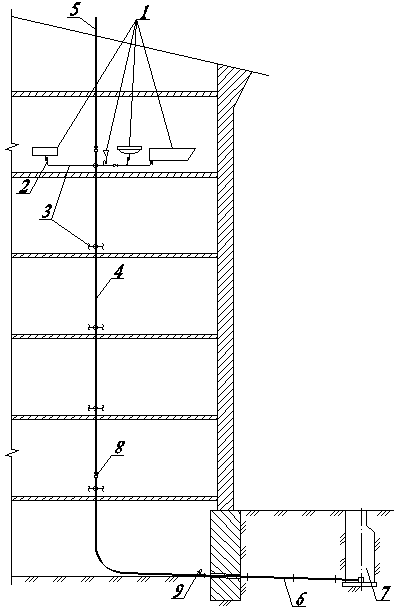

Цена: 140000 рублей
Цена: 140000 рублей
Санитарно-техническое устройство и оборудование современных зданий представляет собой комплекс инженерного оборудования холодного и горячего водоснабжения, канализации, водостоков, мусороудаления, газоснабжения. Этот комплекс необходим для жизнеобеспечения населения и определяет степень благоустройства и комфорта зданий, а также городов и населенных пунктов в целом.
В нашей стране непрерывно осуществляется исключительное по своим масштабам промышленное, гражданское и жилищное строительство. Ежегодно строят более 110 млн. м² жилой площади, свыше 2 млн. отдельных квартир, десятки и сотни новых промышленных комплексов и общественных объектов. Огромные масштабы строительства потребовали создания мощной строительной и санитарно-технической индустрии со специализированными производственными комбинатами, заводами и фабриками.
Техника индустриального строительства зданий и оснащение их санитарно-техническими системами и оборудованием в нашей стране за последние годы достигла довольно высокого уровня.
Вопросы экономии, рационального использования и борьбы с утечкой воды приобрели особое значение, имеющее существенное влияние на разработку новых конструкций санитарно-технического оборудования (арматуры, приборов и т.д.), новых схем и технологического режима.
Ряд новых актуальных задач выдвигается в области повышения надежности и экономичности внутренних систем холодного и горячего водоснабжения, канализации, особенно вопросы: гидравлической устойчивости, стабилизации напоров, ликвидации непроизводительных расходов, утечки, экономии воды, теплоты, энергии и др.
Научный потенциал в стране огромен и нет сомнения в том, что задачи, поставленные перед данной дисциплиной, будут выполнены.
Обоснование принятых санитарно-технических систем и их основные параметры.
1. В связи с высокой степенью благоустройства, здание оборудуется: мойками на кухне, умывальником, унитазом со смывным бачком и ваннами
2. Для поддержания окружающей территории в оптимальном состоянии предусматриваем поливочный водопровод для поливки зеленых насаждений, уборки территории и т.д.
3. В связи с наличием централизованного водопровода в городе в качестве водопитателя принимаем наружные сети диаметром d = 200 мм.
4. В связи с тем, что наружный водопровод работает стабильно, резервного водопитателя и запасно-регулирующих емкостей не предусматриваем.
5. Для уменьшения капитальных и эксплуатационных затрат предусматриваем объединенную хозяйственно-питьевую и поливочную систему холодного водоснабжения.
6. Для отвода бытовых стоков принимаем бытовую канализацию К1, которая должна отводить сточные воды в дворовую сеть канализации и далее в уличную канализационную сеть.
- Системы внутреннего водопровода здания предусматриваем с учетом санитарно-гигиенических и противопожарных требований, требований технологии производства, а также с учетом принятой (существующей) схемы наружного водоснабжения.
Для обеспечения бесперебойности подачи воды всем потребителям в течение всего срока службы здания, принимаем схему, состоящую из одного ввода, одного водомерного узла для потребителей водопроводной сети, трубопроводной арматуры и водоразборной арматуры.
Для определения необходимости установки насосов, для повышения давления, определяем ориентировочный требуемый напор в системе:
Т.к Нтр > Нгар значит, в моей системе необходима установка насоса.
Допустимое давление перед нижней водоразборной точкой не должно превышать 45 м. вод.ст. (0.45МПа)
В проектируемом задании:
Т.к Нниж.т.< 45 м вод.ст., то принимаю однозонную схему водопроводной сети.
В жилых квартирах в качестве водоразборных приборов принимаются смесители.
1. Кухня. Устанавливаем двухвентильный смеситель. Принимаем настольный смеситель на высоте 0,9 м;
2. В ванной комнате устанавливаем смеситель для умывальника с одной рукояткой и смеситель для ванны. Смеситель для умывальника удобен при пользовании, быстро регулируется t0 и расход, возможно перекрытие воды во время процедуры, что снижает непроизвольный расход воды (экономия).
3. В санузле устанавливаем унитаз со смывным бачком. В смывном бачке устанавливаем поплавковый клапан с подводкой 15 мм. Клапан устанавливаем на высоте 0,8 м.
Принимаем водопроводную сеть с нижней разводкой, размещенной в подвале,
Трубопроводы прокладываем в земле ниже глубины промерзания (по заданию 1,8 м) на 0,5 м.
При пересечении с фундаментом здания предусматриваем отверстие на 200 мм больше диаметра трубы, т.к это необходимо для предотвращения перелома трубы при осадке здания.
1. Перед поплавковым клапаном смывного бачка;
2. На ответвлении от стояка в квартиру;
3. У основания стояка;
4. На входе и выходе здания;
5. В водомерном узле, до и после счетчика воды;
6. В установках для повышения давления до и после насосов;
7. На вводе в систему;
8. На обводной линии установки для повышения давления;
9. В колодцах на ответвлении от наружной сети;
10. У основания стояков устанавливаем спускные краны для ремонтных работ.
В качестве запорной арматуры принимаем:
1. На магистралях при входе в здание задвижки МЗВ Dn-50 (Pn-1,6 МПа);
2. На квартирных подводках – шаровые краны Naval (внутренняя резьба) DN 10-50.
- Допускается использовать водоразборную арматуру верхних этажей. В нижних точках системы предусматриваем спускную арматуру. Допускается использовать водоразборную арматуру нижних этажей.
Устанавливаем предохранительную арматуру – обратные клапаны - после насосных установок
На каждые 60-70 м периметра здания предусматриваем по одному поливочному крану, размещаемому в коверах (небольшой колодец в земле для размещения поливочного крана) около здания или в нишах наружных стен здания.
Расчетные расходы определяем по методике СП 30.13330.2020 [1].
U = U0 * nкв.на эт. * nсекц. * nэт. * nзд., (3.2) где:
U0 – заселенность. U0 = (чел./км²)
nкв.на эт. – число квартир на этаже. nкв.на эт. = (шт.)
nсекц. – количество секций. nсекц. = (шт.)
nэт. – число этажей в доме. nэт. = (шт.)
nдом – число домов на генплане. nзд. = (шт.)
U =
U =
Nb0 =
Nb1 =
qсут – суточная норма водопотребления холодной, горячей и общей воды, принимается по приложению А, табл. А2 СП 30.13330.2020 [1] (потребитель - жилое здание с централизованным горячим водоснабжением и с ваннами длинной более 1500-1700 мм.)
U =
где Т – период работы сети жилого здания, Т = 24 часа.
qсек = 5*α*q0;
Секундная вероятность действия сантехнических приборов вычисляется по формуле:
q0 час – норма расхода воды [л/час] одним потребителем в час наибольшего водопотребления, принимаем по таблице А2 СП30.13330.2020; [1]
q0 – расход воды [л/с] одним прибором в секунду, принимается по таблице А СП30.13330.2020;
α(NP) принимается по таблице Б2 СП 30.13330.2020. [1]
αсекB0() =
αсекB1() =
qmax час = 0.005 * α * q0 час
Часовая вероятность действия сантехнических приборов вычисляется по формуле::
q0 – секундный расход прибора [л/с], принимается по таблице А2 СП30.13330.2020; [1]
q0ч – часовой расход прибора [л/час], принимается по таблице А2 СП30.13330.2020; [1]
αчB0() =
αчB1() =
Таблица А.1 «Расчётные расходы для жилого дома»
| Система | *формула* |
*формула* |
*формула* |
*формула* |
| B0 | ||||
| B1 |
1. Унитаз напольный (710х420мм) со сливным бачком с боковой подводкой: 
Цена: 140000 рублей
2. Мойка (450х505):


Цена: 32476 рублей
3. Раковина (550х400 мм):


Цена: 6000 рублей
4. Ванна (1500х750):


Цена: 11490 рублей
Диаметр условного прохода счетчика воды следует выбирать исходя из среднечасового расхода воды за период потребления (сутки), который не должен превышать эксплуатационный, принимаемый по таблице 12.1 СП 30.13330.2020. [1]
Для выбора и расчета общедомового счетчика используем ранее вычисленные расходы водоснабжения:
Потери напора (давления) в счетчике h, м вод. ст., при максимальном расчетном расходе воды qB0сек, л/с, следует определять по формуле:
hвод = S * (qB0сек)2, (3.6)
Отсюда, h = м вод. ст. Потери напора не превышают 5 м вод. ст. (наибольшее допустимое значение для крыльчатых счетчиков, п. 12.16 СП 30.13330.2020). [1]
Принимаем диаметр условного прохода водосчетчика d = мм.
Принимаем в проекте для общедомового водомерного узла системы ХВС счетчик ВСГН (АО «Тепловодомер», Россия) Ду мм, оснащенный возможностью установки дополнительного модуля передачи данных.

Рисунок 1. Счетчик воды (ОА «Тепловодомер»)
Общедомовой водомерный узел на вводе В1 представлен на схеме рис. 3. При конструировании трубной обвязки водомерного узла учтены требования п. 12.9 СП 30.13330.2020. [1]

Рисунок 3. Схема общедомового водомерного узла на вводе водопровода В1 в здание: 1 – счетчик воды крыльчатый; 2 – фильтр механической очистки; 3 – задвижка; 4 – вентиль; 5 – кран шаровый; 6 – заглушка; 7 – тройник; 8 – отвод; 9 – переход стальной; 10, 11 – труба стальная водогазопроводная
Для обеспечения долговечности ввода, прокладываемого в грунте, принимаем чугунные трубы, соединяемые в раструбах.
Здание присоединяем одним вводом к наружной сети. Между вводом на наружной сети водопровода предусматриваем запорную арматуру, для отключения подачи воды в здание при аварии на одном из участков сети.
Ввод прокладываем перпендикулярно наружной стене здания или фундамента для защиты ввода от просадки здания ввод прокладывается через гильзу.
Зазор между гильзой заделываем с помощью просмоленного каната и глины с целью защиты здания от попадания влаги и грунтовых вод.
1. Ввод рассчитываем на пропуск максимально-секундного расхода общей воды. Из таблицы А.1 Приложения А: qB0сек = л/с.
2. По таблице выбираем для данного расхода диаметр трубопровода, диаметр ввода так, чтобы скорость воды составляла 0,3-1,5 м/с.
Принимаем dвв = мм ( v = м/с).
Потери на вводе определяются согласно формуле (3.7)
hвв = i * L (1.7)
где: i = – по таблице для данного расхода и диаметра, Lвв – длина ввода (определяется по генплану), Lвв = м.;
Тогда hвв = м
Величина требуемого напора 𝐻тр, м вод. ст., необходимого для подачи воды потребителю, определяется по формуле:
Hтр = Hgeom+∑ Hil + Hпр + ∑ Hвод +Hтепл + Hlввод, (3.8)
где Hgeom - геометрическая высота расположения диктующего санитарно-технического прибора над точкой подключения, м вод. ст. (принимаем равной м вод. ст.);
∑Hil - сумма потерь напора на всех участках трубопровода диктующего направления, м вод. ст. (принимаем равной м вод. ст. согласно гидравлическому расчету по табл. 1);
Hпр - напор (давление) перед диктующим прибором, м вод. ст., принимаемое равным 20 м вод;
∑Hвод - сумма потерь напора в узлах учета потребляемой воды (общем для жилого комплекса, общедомовом, индивидуальном), м вод. ст. (принимаем потери в общедомовом и квартирном счетчике м).
Hlввод - потери напора на вводе водопровода, при пропуске расхода воды на хозяйственно-питьевые нужды и (или) противопожарного расхода воды, м вод. ст.
Требуемый напор воды составит:
Hтр = м вод.ст.
Гарантированный напор Нгар, м вод ст., в точке подключения к внутриквартальной сети водоснабжения составляет м вод. ст. (по заданию), Hтр ˃ Нгар, следовательно, необходимо предусматривать насос в системе внутреннего водоснабжения.
Рабочий напор насоса может быть определен по формуле:
Hp = Hgeom + ∑ Hl,tot + Hпр - Hгар=Hтр - Hгар, м вод. ст., (3.9)
Где ∑ Hl,tot - сумма потерь напора (давления) в сети водопровода, м вод. ст.
Отсюда, Hp = м вод.ст.
В проекте предусматриваем одну насосную установку для повышения давления в системе ХВС. Работу насосной установки предусматриваем без бака запаса воды. При выборе марки и типа насосной установки ориентируемся на следующие показатели:
Для жилого многоквартирного здания со встроенными помещениями общественного назначения запроектирована самотечная бытовая канализация К1 для отведения сточных вод от санитарно-технических приборов. Система К1 запроектирована из полиэтиленовых труб диаметром 50 и 110 мм по ГОСТ 22689-2014. Фасонные части предусмотрены из аналогичного материала. Согласно требованиям п. 18.4 СП 30.13330.2020 [1] в проекте предусмотрены косые крестовины и тройники для присоединения поэтажных отводов к стоякам, а также в точках подключения стояков к сборным горизонтальным трубопроводам.
Для возможности устранения засоров в системе К1 предусмотрены прочистки и ревизии, устанавливаемые через каждые три этажа.
Выпуски бытовой канализации предусмотрены из труб НПХВ диаметром 110 мм по ГОСТ 32413-2013. Из аналогичных труб монтируется и дворовая канализационная сеть.
Максимальный секундный расход сточных вод в стояке бытовой канализации определяется по формуле:
qs = qtot + q0S, л/с (4.1)
где qtot – максимальный общий секундный расход воды, л/с; q0S - максимальный секундный расход стоков от прибора с максимальным водоотведением (для умывальника – 0,15 л/c; для ванн – 1,1 л/с; для унитаза – 1,6 л/с; стиральная машина – 1 л/с).
Произведем определение максимального секундного расхода сточной воды для стояка К1-1:
qs = qtot + q0S, л/с
где qtot – максимальный общий секундный расход воды, л/с, в стояке; q0S - максимального секундного расход стоков от прибора (унитаза) – 1,6 л/с.
Максимальный общий секундный расход воды в Ст.В1-1 qtot, л/с, следует определять по формуле:
qtot = 5q0α,
где q0 – общий секундный расход воды прибором, л/с (принимаем 0,3 л/с); α - коэффициент, определяемый по приложению Б в зависимости от общего числа приборов N на расчетном участке сети и вероятности их действия Р.
Вероятность действия приборов: PсекB0 = .
Поскольку величина вероятности не превышает 0,1, используем приложение Б.2 СП30.13330.2020 [1] для определения коэффициента α: N·P = · = . Отсюда α = .
Максимальный общий секундный расход воды:
qtot = 5q0α = 5 · 0,3 · = л/с.
Максимальный секундный расход сточной воды для стояка К1-1:
qs = + 1,6 = л/с.
В проекте принимаем полиэтиленовые трубы по ГОСТ 22689-2014 для монтажа систем внутренней канализации.
Максимальный секундный расход сточных вод в горизонтальном трубопроводе канализации:
где qhrtot – максимальный общий часовой расход воды на расчетном участке, м³/ч; ks ‒ коэффициент, принимаемый по таблице 5.1 СП30.13330.2020 [1]; q0s- расход стоков, л/с, от присоединяемого прибора с максимальной емкостью, принимаемый по таблице А.1 (для ванны – 1,1 л/с).
Выбор расчетного уклона i, средней скорости сточной жидкости v, м/с, и наполнения h/d следует производить таким образом, чтобы было выполнено условие, характеризующее режим самоочищения в безнапорном трубопроводе (п. 19.1 СП 30.13330.2020 [1]):
где h/d –наполнение трубопровода сточной жидкостью (принимать в интервале от 0,3 до 0,8); V – скорость течения сточной воды, м/с (принимать не менее 0,7 м/с).
К = 0,5 – для трубопроводов из полимерных материалов;
К = 0,6 – для трубопроводов из других материалов.
Согласно п. 6.2.4 СП 32.13330.2018 [3] отметку минимальной глубины заложения лотка трубопровода допускается принимать выше отметки глубины проникания в грунт нулевой температуры на 0,3 м (при диаметре трубы до 500 мм).
Глубину заложения выпуска h1, м, внутренней бытовой канализации (до низа трубы) определим по формуле:
h1 = h2 - 0,3 = - 0.3 = м (4.3)
где h2 – глубина промерзания грунта, м (принимаем равной м по заданию).
Материал, изложенный курсовом проекте, соответствует учебной программе курса «Водоснабжение и водоотведение».
В курсовом проекте рассмотрен и проработан обширный круг теоретических и практических вопросов, которые должны изучать студенты для получения квалификации инженера по специальности ВиВ».
Выполнение этого курсового проекта позволяет последовательно изучить внутренние санитарно-технические системы холодного водоснабжения и канализации.
По каждой системе изучены и применены на практике материалы, позволяющие производить расчеты, проектирование, а так же строительства и дальнейшей эксплуатации раcчитываемого объекта.
Все расчеты произведены в соответствии с современными нормами и правилами.
В конструкциях систем применены новейшие строительные материалы, что позволяет максимально приблизить расчеты к реальной проектной работе инженера-проектировщика.
1. СП 30.13330.2020 Свод правил. Внутренний водопровод и канализация зданий. Актуализированная редакция СНиП 2.04.01-85*.
2. СП 31.13330.2021. Свод правил. Водоснабжение. Наружные сети и сооружения. Актуализированная редакция СНиП 2.04.02-84*.
3. СП 32.13330.2018. Свод правил. Канализация. Наружные сети и сооружения. Актуализированная редакция СНиП 2.04.03-85.
4. СП 73.13330.2016. Свод правил. Внутренние санитарно-технические системы зданий.
5. Шевелев Ф.А., Шевелев А.Ф. Таблицы для гидравлического расчета водопроводных труб: справ. пособие – 10-е изд., испр. – М.: БАСТЕТ, 2014.
6. Лукиных А.А., Лукиных Н.А. Таблицы для гидравлического расчета канализационных сетей и дюкеров по формуле Н.Н. Павловского. –М.: Стройиздат, 1974.– 156 c.
7. Викулин П.Д., Викулина В.Б. Гидравлика систем водоснабжения и водоотведения: учебник для студентов вузов, обучающихся по программе бакалавриата по направлению 270800 «Строительство» (профиль «Водоснабжение и водоотведение») – М.: МГСУ, 2014. – 249 с.
8. Лямаев, Б. Ф. Системы водоснабжения и водоотведения зданий: учебное пособие / Б. Ф. Лямаев, В. И. Кириленко, В. А. Нелюбов. — 2-е изд. — Санкт-Петербург: Политехника, 2020. — 305 c.
9. Зятина, В. И. Оборудование и материалы систем водоснабжения и водоотведения: учебно-методическое пособие для студентов направления подготовки 08.03.01. «Строительство» профиль «Водоснабжение и водоотведение» всех форм обучения / В. И. Зятина, В. И. Лесной.
10. Справочник проектировщика ч. 2 «Водопровод и канализация» под редакцией Староверова И.Г. и Шиллера Ю.И.. – Москва, Стройиздат 1990 г.
Таблица А.3 «Расчет вертикальных трубопроводов»
| Nуч. | Nпр | PсекB0 | NP | α | qсекB0 | qК1 л/с | qсекK1 | dст | Угол |
| 1 | 2 | 3 | 4 | 5 | 6 | 7 | 8 | 9 | 10 |
| К1-1 | 1.6 | 100 | 45 |
Таблица А.4 «Расчет горизонтальных трубопроводов»